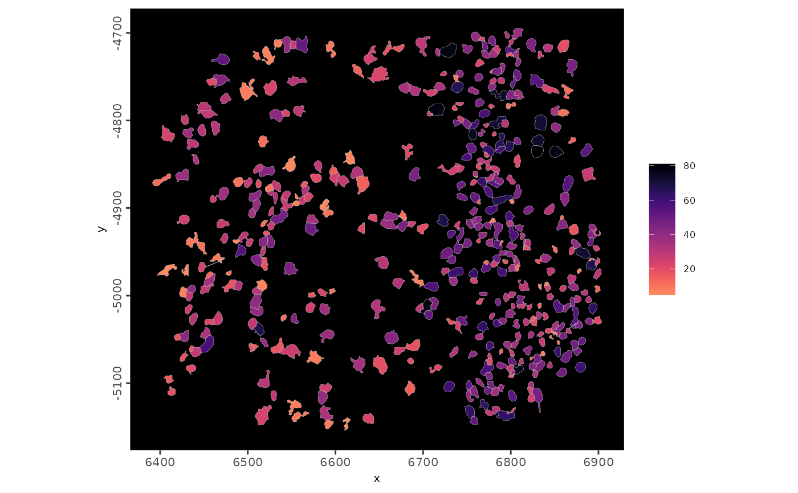
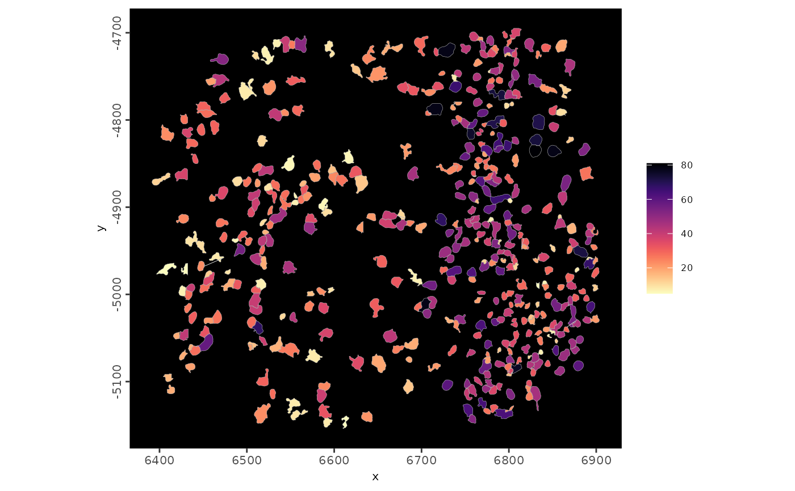
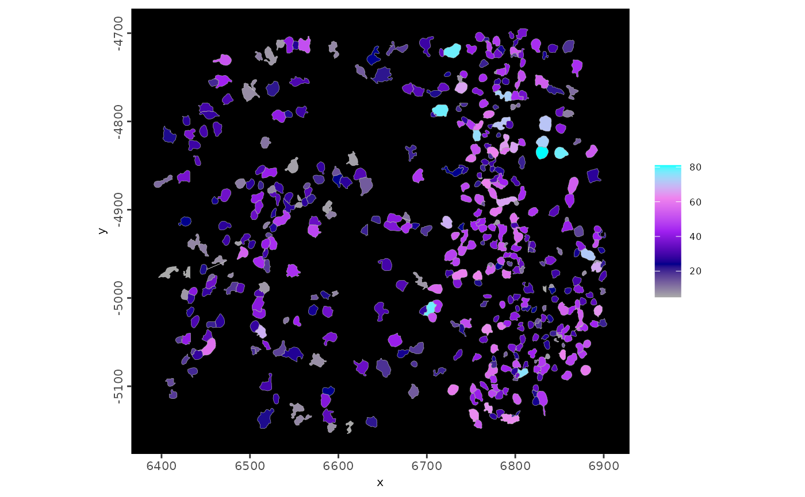
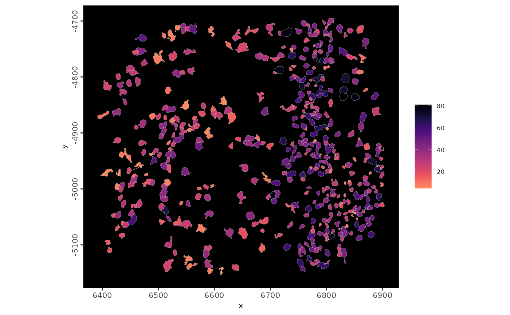
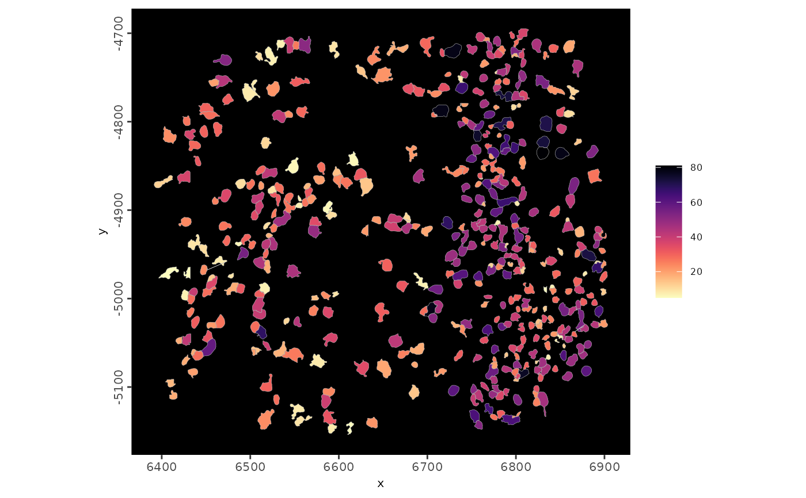
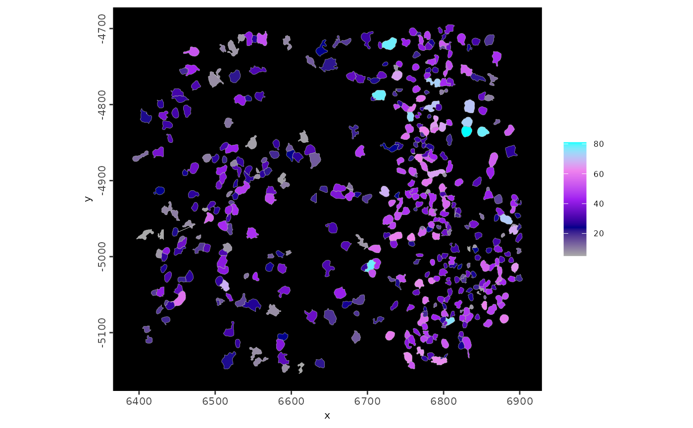

Generates a gradient color palette based on input to colors param. Sets a
default gradient if NULL is passed.
midpoint param only supplied when using color scale with 3 colors.
Supports colors setting at four levels:
type specific defaults - defaults for a specific feature or type of plot can be passed through
data_defaultparamglobal options (general session setting with blanket color palette type effects)
options('giotto.color_cd_pal) - default continuous divergent palette is blue, white, red, for sequential ('giotto.color_cs_pal), it is 'viridis'
options('giotto.color_c_rev) - whether colors should be reversed
giotto instructions (gobject specific and effects specific types of plots)
run
showColorInstructions()for details on options/params to set in thegiottoInstructionsobject
function specific (directly pass desired colors to plotting function)
Usage
set_default_color_continuous(
colors = NULL,
midpoint = NULL,
style = c("divergent", "sequential"),
...,
instr_pal,
instr_rev,
data_default = NULL,
type = c("fill", "color")
)
set_default_color_continuous_cell(
colors = NULL,
instrs,
midpoint = NULL,
style = "divergent",
...,
data_default = NULL
)
set_default_color_continuous_poly(
colors = NULL,
instrs,
midpoint = NULL,
style = "divergent",
...
)
set_default_color_continuous_heatmap(
colors = NULL,
instrs,
midpoint = NULL,
style = "divergent",
...
)
set_default_color_continuous_CCcom_heatmap(
colors = NULL,
instrs,
midpoint = NULL,
style = "divergent",
...
)
set_default_color_continuous_CCcom_dotplot(
colors = NULL,
instrs,
midpoint = NULL,
style = "divergent",
...,
type = c("fill", "color"),
data_default = list(pal = c("darkblue", "blue", "white", "red", "darkred"))
)Arguments
- colors
character or
NULL. 2 to n number of hex color codes or 1 single name of a palette to use can be passed- midpoint
numeric. midpoint value of color gradient
- style
scale color scale around
midpoint(divergent) or starting from minimum value (sequential)- ...
additional params to pass to respective ggplot fill_gradient functions
- instr_pal, instr_rev
used by upstream function to pass specific
giottoInstructionsparams- data_default
data type (e.g. cells, polys, heatmap) specific default colors to use
- type
whether setting is for ggplot2 'fill' or 'color' type function
- instrs
giottoInstructionsobject (output ofinstructions(gobject))
Functions
set_default_color_continuous(): Framework function. Direct use should be minimal. Specific wrapper functions should be used for each item that needs defaults setting (plots or types of features).
Examples
g <- GiottoData::loadGiottoMini("vizgen")
#> 1. read Giotto object
#> 2. read Giotto feature information
#> 3. read Giotto spatial information
#> 3.1 read Giotto spatial shape information
#> 3.2 read Giotto spatial centroid information
#> 3.3 read Giotto spatial overlap information
#> 4. read Giotto image information
#> python already initialized in this session
#> active environment : '/usr/bin/python3'
#> python version : 3.12
nr_feat_polys <- function(...) {
spatInSituPlotPoints(g,
polygon_fill = "nr_feats",
polygon_fill_as_factor = FALSE,
polygon_feat_type = "aggregate",
polygon_line_size = 0.1,
polygon_alpha = 1,
...
)
}
# default
nr_feat_polys()
#> Warning: You need to select features (feats) and modify feature
#> types (feat_type) if you want to show individual features
#> (e.g. transcripts)
#> This warning is shown once per session
#> plot polygon layer done
# set global option level: viridis
options("giotto.color_c_pal" = "v")
nr_feat_polys()
#> plot polygon layer done
 # set instructions level: magma
GiottoClass::instructions(g, "poly_color_c_pal") <- "magma"
nr_feat_polys()
#> plot polygon layer done
GiottoClass::instructions(g, "poly_color_c_rev") <- TRUE
nr_feat_polys()
#> plot polygon layer done

nr_feat_polys(polygon_fill_gradient_style = "s")
#> plot polygon layer done

# set function level: mako
GiottoClass::instructions(g, "poly_color_c_rev") <- FALSE
nr_feat_polys(polygon_fill_gradient = "mako")
#> plot polygon layer done
# set function level: color vector (2 to n colors)
nr_feat_polys(
polygon_fill_gradient = c("green", "purple"),
polygon_fill_gradient_style = "s"
)
#> plot polygon layer done
nr_feat_polys(
polygon_fill_gradient = c("blue", "yellow", "red"),
polygon_fill_gradient_style = "s"
)
#> plot polygon layer done
nr_feat_polys(
polygon_fill_gradient = c(
"darkgrey", "darkblue", "purple", "violet", "cyan"
),
polygon_fill_gradient_style = "s"
)
#> plot polygon layer done

# set instructions level: magma
GiottoClass::instructions(g, "poly_color_c_pal") <- "magma"
nr_feat_polys()
#> plot polygon layer done
GiottoClass::instructions(g, "poly_color_c_rev") <- TRUE
nr_feat_polys()
#> plot polygon layer done

nr_feat_polys(polygon_fill_gradient_style = "s")
#> plot polygon layer done

# set function level: mako
GiottoClass::instructions(g, "poly_color_c_rev") <- FALSE
nr_feat_polys(polygon_fill_gradient = "mako")
#> plot polygon layer done
# set function level: color vector (2 to n colors)
nr_feat_polys(
polygon_fill_gradient = c("green", "purple"),
polygon_fill_gradient_style = "s"
)
#> plot polygon layer done
nr_feat_polys(
polygon_fill_gradient = c("blue", "yellow", "red"),
polygon_fill_gradient_style = "s"
)
#> plot polygon layer done
nr_feat_polys(
polygon_fill_gradient = c(
"darkgrey", "darkblue", "purple", "violet", "cyan"
),
polygon_fill_gradient_style = "s"
)
#> plot polygon layer done
